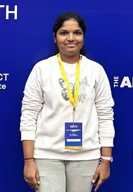

Hello! Welcome to My Portfolio.
I'm ,
currently pursuing my Bachelor of Technology in Information
Technology at
G. Narayanamma Institute of Technology and Science.

About Me
Hello! I'm Gunashree Aishwarya Pappula, a passionate and driven second-year BTech student specializing in Information Technology at G. Narayanamma Institute of Technology and Science in Hyderabad. With a strong foundation in programming and a keen interest in data structures, algorithms, and web development, I am committed to leveraging my technical skills to solve real-world problems.
My academic journey has been marked by a CGPA of 9.36, reflecting my dedication and hard work. In addition to academics, I've served as Vice President of the Eyantra Club, organizing workshops on advanced robotics, CAD modeling, and 3D printing. This role has honed my leadership skills and ability to manage complex projects effectively.
I thrive in collaborative environments and am passionate about continuous learning. My participation in hackathons and tech projects, including the T-HUB Hackathon where I worked on a customer churn prediction project, has enhanced my problem-solving and teamwork abilities.
Outside the classroom, I am an avid sports enthusiast, enjoying Kabaddi, which not only keep me physically active but also enhance my strategic thinking and team spirit.
Feel free to explore my portfolio to learn more about my experiences. Let's connect and collaborate on exciting tech ventures.
Experience
Vice President, Eyantra Club
- Organized advanced robotics workshop focusing on CAD modeling and 3D printing
- Coordinated logistics, facilitated sessions, and collaborated on curriculum
- Received positive feedback from participants
Customer Churn Prediction Project, Mathademia 2024
- Participant at T-HUB Hackathon, Hyderabad May 2024
- Collaborated with a team to develop a customer churn prediction solution using advanced ML and AI techniques.
- Gained valuable insights from 50 mentors, enhancing project effectiveness.
- Showcased among 37 teams selected from 1800, highlighting our technical and collaborative skills.
- Acknowledged by TalentFarm.ai, Idealabs FutureTech Ventures, and MATH - ML & AI Technology Hub.